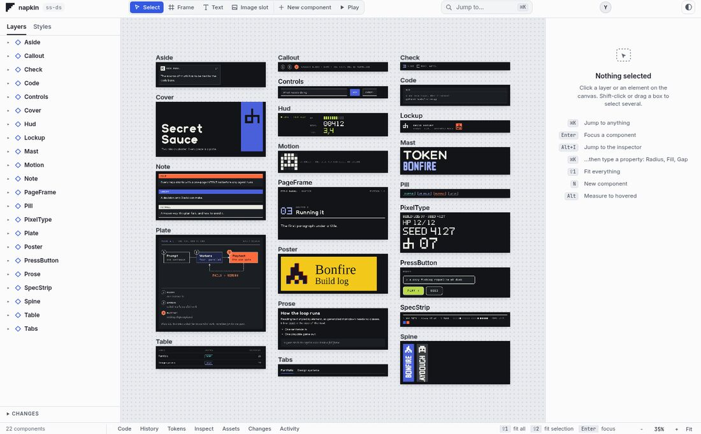
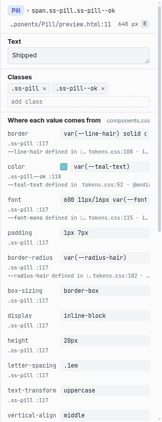
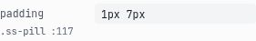
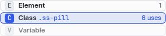
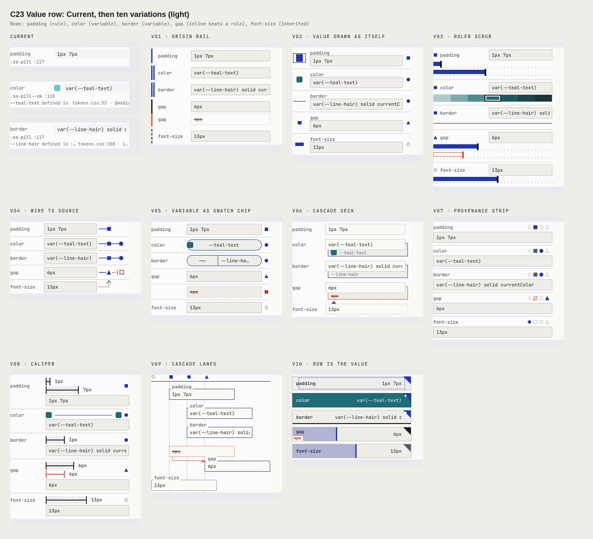
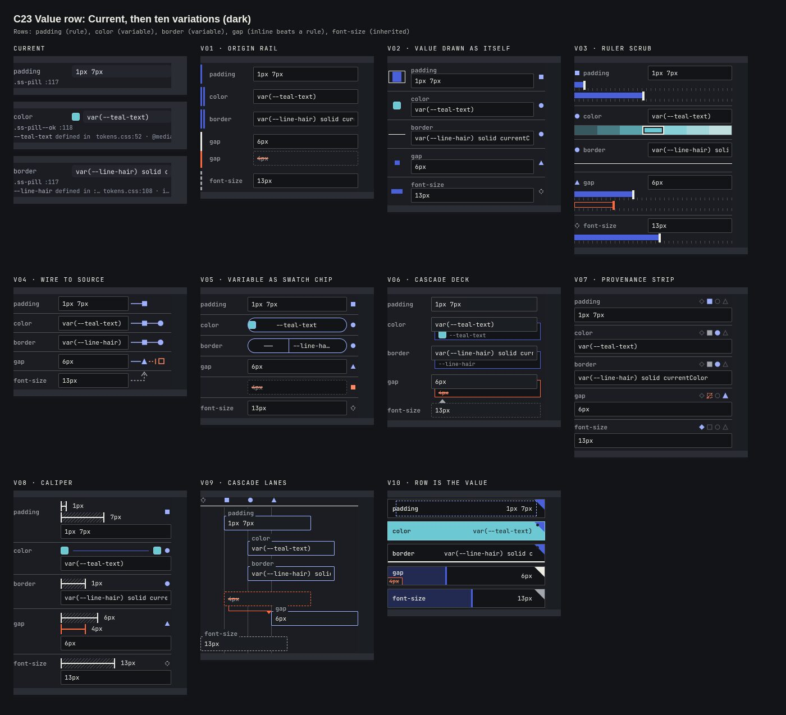

Interface review
Every part of napkin's interface in Storybook, from the whole screen down to a single control, ready for your feedback, with 10 variations of each to follow.
You asked for a structured way to go through the interface from largest to smallest, give feedback, and see 10 variations of each component that make it self-evident without needing its text. You also asked me to hand the work to fresh agents and keep token use down. Storybook is set up with the current interface captured from the running app. The first set of variations, for the value row, is being designed now.
What I decided on your behalf
You said you trust my judgement. Here is what that covered, so you can overrule any of it.
| Question | My call | Why |
|---|---|---|
| Which design system | Secret Sauce | napkin's interface uses only its own small set of colour and font tokens, with no spacing, radius or size tokens, and nothing from Secret Sauce. Secret Sauce is the only complete system you have, and it's what you called "our design system". Variations will look noticeably different from today. |
| How many variations | 10 per item, in the order you review | All 66 items would be 660 designs. Going in your order means your feedback on early items can settle a pattern for similar ones, and you can stop any time. |
| Which item first | C23 Value row | It's the inspector's most-used control and the most text-heavy today: a property name, a value, and its source as a file and line. |
| Where it lives | Its own branch, area/storybook | Storybook is a development tool only. The product's runtime doesn't use it, and nothing changes for napkin's users. |
What's built
The interface as it is today, captured from the real app on real Secret Sauce components.




| Part | What it does |
|---|---|
| Sidebar | 1 Interface, 2 Panels, 3 Components, largest first. Each item's stories are named "Current · state". |
| Feedback tab | Keep, change or drop, plus a note, for the story on screen. It saves to one file I read directly, so you don't have to relay anything. |
| Reviewed marks | A tick on reviewed stories and a count on each item, so progress shows in the sidebar. |
| Theme toolbar | Light and dark for every story. |
| Recapture | npm run storybook:capture rebuilds every Current story from the live app after the interface changes. |
| Variation guide | storybook/VARIATIONS.md lets a fresh builder add 10 variations to one item from that page alone. |
Added as development-only dependencies, each pinned and published at least two weeks earlier: storybook 10.6.2 and @storybook/html-vite 10.6.2 (both 2026-10-12), and vite 7.3.7 (2026-10-06). All 104 stories opened without errors in both themes, the build succeeds, and the check that napkin writes nothing into folders still passes.
How to review
About a minute per item. Start at the top and work down.
- Open http://127.0.0.1:6006 on this machine. It's running now and isn't reachable from other devices. To start it again later:
cd ~/Projects/.worktrees/napkin-storybook && npm run storybook - Pick a story in the sidebar, starting with 1 Interface. Switch themes from the toolbar if you want to see both.
- In the Feedback tab at the bottom, choose keep, change or drop, and add a note when "change" needs explaining.
- When variations arrive, they appear under the same item as "Variation 01" to "Variation 10", next to the Current story. Mark the ones you like and the ones you don't.
- Tell me when you've finished a batch, or just keep going. I read the feedback file and use it to brief the next builder.
The plan from here
Small steps, each with one fresh builder, so you see results before the cost grows.
| Step | What happens | Status |
|---|---|---|
| Foundation | Storybook, inventory, captured current interface, feedback panel. | done |
| Pilot | 10 variations of the value row in Secret Sauce, ranging from conservative to bold, with a review sheet beside the current row. | done |
| Your read on the pilot | Which ideas work as "self-evident without text". This sets the brief for every later batch. | waiting for you |
| Batches | The remaining items, a few at a time, in the order you review. Items that share a pattern get a shared decision. | later |
| Into the product | Variations you keep become changes to napkin itself, built and checked as separate work. | later |
How I'm keeping token use down
- One fresh builder per task with a short brief. No builder is resumed for a new round, so none carries a long history.
- Details go into files. Builders send me reports of 12 to 15 lines, and I read the files only when needed.
- One task at a time. No parallel lanes, which is what hit your usage limits before.
- No full test suite for Storybook work, since it doesn't change the product. Builders check only what they built.
- Your feedback replaces critic rounds for how the interface looks and feels. I check a builder's work by looking at its result.
The foundation builder used about 219,000 tokens. That included installing Storybook, finding all 66 items in the running app, and capturing 104 states.
The pilot: value row
Ten ways to show a property's value and where it comes from, so you can see it instead of reading it.
Every variation shows the same five rows: a padding set by a rule, a colour and a border from variables, a gap where an inline style beats a rule, and an inherited font size. In Storybook they're under 3 Components › C23 Value row, next to the Current stories, in both themes.


| No. | Idea | What replaces the text | My read |
|---|---|---|---|
| 01 | Origin rail | A rail on the left edge: solid for a rule, double for a variable, dashed for inherited, red for the value that lost | Safe, closest to today |
| 02 | Value drawn as itself | Padding as a box, a colour as its swatch, a border as the real line, a length as a bar | Strong; the value is visible at a glance |
| 03 | Ruler scrub | Draggable ruled bars for lengths, a strip of neighbouring shades for colour | Good for editing, but tall |
| 04 | Wire to source | A wire from the field to a square for a rule, then a circle for a variable | Clear once you know the shapes |
| 05 | Variable as swatch chip | A variable becomes a pill holding the colour or line it stands for | Strong, and small enough to use everywhere |
| 06 | Cascade deck | The value sits on cards stacked behind it: the variable, or the value it beat | Good idea, busy in practice |
| 07 | Provenance strip | Four shape cells for inherited, rule, variable and inline, lit where set | Needs learning; reads like a legend |
| 08 | Caliper | Lengths as a measured gap between two jaws; a colour tied to its variable's swatch | Strong for spacing |
| 09 | Cascade lanes | The field's position across four lanes says where the value comes from | Weakest; reads as a diagram, not a control |
| 10 | The row is the value | The colour floods the row, padding is a dashed inner box, a length is a filled bar | Boldest; cuts off long values today |
Two small departures from Secret Sauce: property names stay in lowercase monospace at 11 px because they're code, and IBM Plex Mono isn't available offline, so it falls back to napkin's monospace. The builder used about 117,000 tokens.
The inventory
All 66 items as found in the running app, with the states captured for each.
Level 1 · Interface (6)
| Id | Item | What it is for | States captured |
|---|---|---|---|
| I01 | Canvas | The whole editor in its main mode: layers on the left, the canvas of component frames, the inspector on the right, the status bar under. | First open (stylesheet question); Nothing selected; An element selected, inspector open; A value being typed (scope chooser) |
| I02 | Canvas with a drawer | The same editor with one drawer open under the canvas (Code, History, Tokens, Inspect, Assets, Changes, Activity). | Tokens drawer; History drawer; Code drawer |
| I03 | Film strip | A component's versions as a film strip under the canvas (H): scrub, flip before/after, restore. | Strip open on a component |
| I04 | Play mode | Frames become live and clickable so a component can be tried like the real thing (Space). | Playing |
| I05 | Jump to anything | The command palette (Cmd-K): jump to a component, a node, a property or an action. | Open, empty query; A query typed |
| I06 | Focused component | Enter zooms to one component and dims the rest so a single frame can be worked on. | One component in focus |
Level 2 · Panels (20)
| Id | Item | What it is for | States captured |
|---|---|---|---|
| P01 | Top bar | Brand, the tools (select, frame, text, image slot, new component, play), jump-to, theme, revision. | Default; New component form open; Frame tool active |
| P02 | Layers | The tree of components and their elements; click to select, twirl to open, rows have a menu. | Components, collapsed; One component open, an element selected; Row menu open |
| P03 | Styles tab | The folder's stylesheets as a list of classes and variables, filterable. | Styles list; Filtered |
| P04 | Changes list | The session's edits, newest first, at the foot of the sidebar. | Collapsed; Open, no changes yet |
| P05 | Inspector | Everything about the selected element: its text, classes, where each value comes from, rules, variables, checks. | Nothing selected; An element selected; A value being typed (scope chooser); A component selected |
| P06 | Status bar | Component count, drawer tabs, key hints and the zoom control. | Default; A drawer tab active |
| P07 | Canvas | The infinite canvas: every component as a frame, panned and zoomed. | All frames, fitted; An element selected; Zoomed in on a frame |
| P08 | Drawer | One panel under the canvas with a pane per tool. | Code pane; History pane; Tokens pane; Inspect pane; Assets pane; Changes pane; Activity pane |
| P09 | Film strip panel | The strip itself: versions as thumbnails, Now on the right, flip, fit, restore. | Open |
| P10 | Breakpoints | The selected frame's @media conditions and the same frame at other widths. | Open on a frame |
| P11 | Jump-to palette | The Cmd-K dialog: a field, results, a footer of keys. | Open; A query typed |
| P12 | Shortcuts sheet | Every keyboard shortcut, opened with ?. | Open |
| P13 | Highlight | Light up every place a rule or variable applies: the picker, the count bar and the side list. | Picker open; A rule lit up |
| P14 | Theme wipe | A slider wipes one theme of the components into another across the canvas. | Open |
| P15 | Play bar | The bar shown while frames are live. | Playing |
| P16 | Stylesheet question | Asked once per folder: which stylesheets do the components share. | Asking |
| P17 | Empty state | Teaching card shown on an empty canvas. | Empty canvas |
| P18 | Row menu | The menu behind a layer row's dots. | Open |
| P19 | Frame (one component) | One component card on the canvas: title bar, live frame, width grip. | Resting; With its element selected |
| P20 | Selection and measure overlays | Outlines drawn over the canvas: selection, hover and measuring. | An element selected |
Level 3 · Components (40)
| Id | Item | What it is for | States captured |
|---|---|---|---|
| C01 | Tool button | A tool in the top bar: icon, label, shortcut key. | Active (Select); Idle (Frame) |
| C02 | Jump-to button | The search field look-alike that opens the palette. | Resting |
| C03 | Theme toggle | Switches the chrome between light and dark. | Resting |
| C04 | Component theme select | Which theme the components are shown in. | Resting |
| C05 | Brand lockup | The napkin glyph, the name and the folder. | Resting |
| C06 | Revision chip | The revision of the component drawn last. | Resting |
| C07 | Presence | Who and what is connected: avatars and the agent status. | Resting |
| C08 | Sidebar tabs | Layers / Styles switch. | Layers active; Styles active |
| C09 | Component row | A layer row for a component: twirl, icon, name, menu. | Resting; Open |
| C10 | Element row | A layer row for an element inside a component. | Resting; Selected |
| C11 | Frame title bar | A frame's name, file path and revision above the frame. | Resting |
| C12 | Width grip | Drag to change a frame's width; keys step it. | Resting |
| C13 | Frame ruler | Breakpoint marks above a frame while it is selected. | Frame selected |
| C14 | Frame caption | The width label under a frame. | Resting |
| C15 | Zoom control | Zoom out, level, zoom in, fit. | Resting |
| C16 | Component count | How many components are on the canvas. | Resting |
| C17 | Drawer tabs | The tabs that open each drawer pane. | Resting; One active |
| C18 | Key hints | Three shortcuts always in view. | Resting |
| C19 | Selection chip | The inspector's breadcrumb: component chip and the element's selector. | Element selected |
| C20 | Source line | File and line of the element, with the frame-width key. | Resting |
| C21 | Text field | The element's text, editable. | Resting |
| C22 | Class chips | The element's classes, removable, with an add field. | Resting |
| C23 | Value row | One property: name, resolved value, the field, and where the value comes from. | A length (padding); A colour with a variable; A shorthand with a variable |
| C24 | Scope chooser | Where a typed value is written: this element, this class, or the variable; shows the diff. | A value typed |
| C25 | Scope note | The one-line change the chosen scope would make. | A value typed |
| C26 | Origin chips | Under a value: the rule and the variable it came from, each lights up its places. | Rule and variable |
| C27 | Declaration row | A property : value line, and the add line. | Add line |
| C28 | Rule block | A rule that applies: its selector, source, and declarations. | Resting |
| C29 | Fold section | A collapsible inspector section. | Closed; Open |
| C30 | Variable chip | One variable of the folder: swatch or bar, name, value; click to use it. | A colour; A space; A radius |
| C31 | Variable strip | A row of variables of one kind (colour, space, radius, type). | Colours; Spaces |
| C32 | Variable filter | Filters the variables list. | Empty |
| C33 | Checks row | Contrast and other checks as chips, with a summary. | Resting |
| C34 | Nothing selected card | What the inspector says when nothing is picked. | Resting |
| C35 | Shortcut row | A key and what it does, listed under "Nothing selected". | Resting |
| C36 | Palette result | A row in the jump-to list. | Resting |
| C37 | New component form | Name a new component and create it. | Open |
| C38 | Stylesheet choice | One stylesheet of the question: a checkbox, its name, why. | Checked |
| C39 | Time cue chip | Names the version under the playhead. | Strip open |
| C40 | Film strip button | Flip, fit and restore controls of the strip. | Strip open |
Still open
- Design system: confirm Secret Sauce, or say you'd rather keep napkin's current look and have me add the missing tokens.
- The pilot: mark the value-row variations in Storybook. Your marks set the brief for the next batch.
- Earlier work, unchanged: the napkin build is still where the gauntlet record left it, with no merges since. That record and this page are published but not committed to git yet.